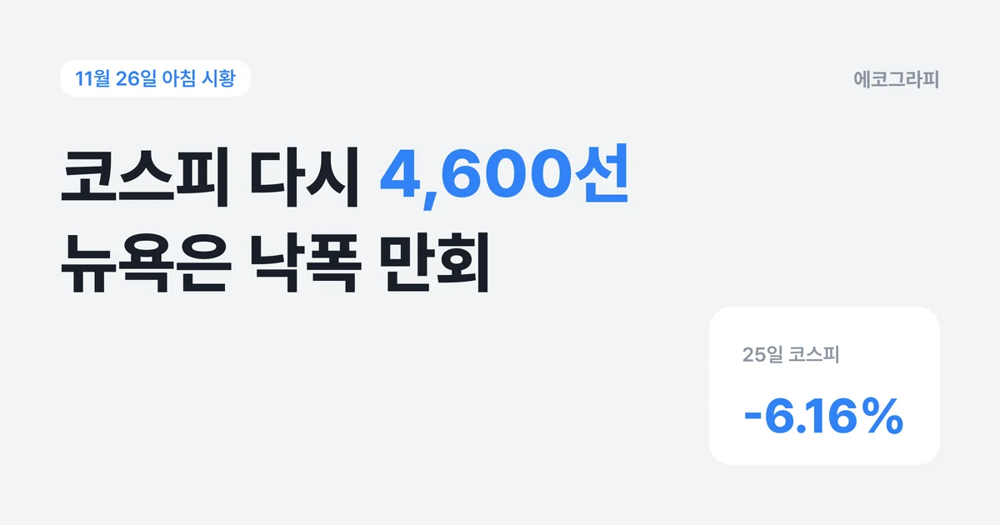
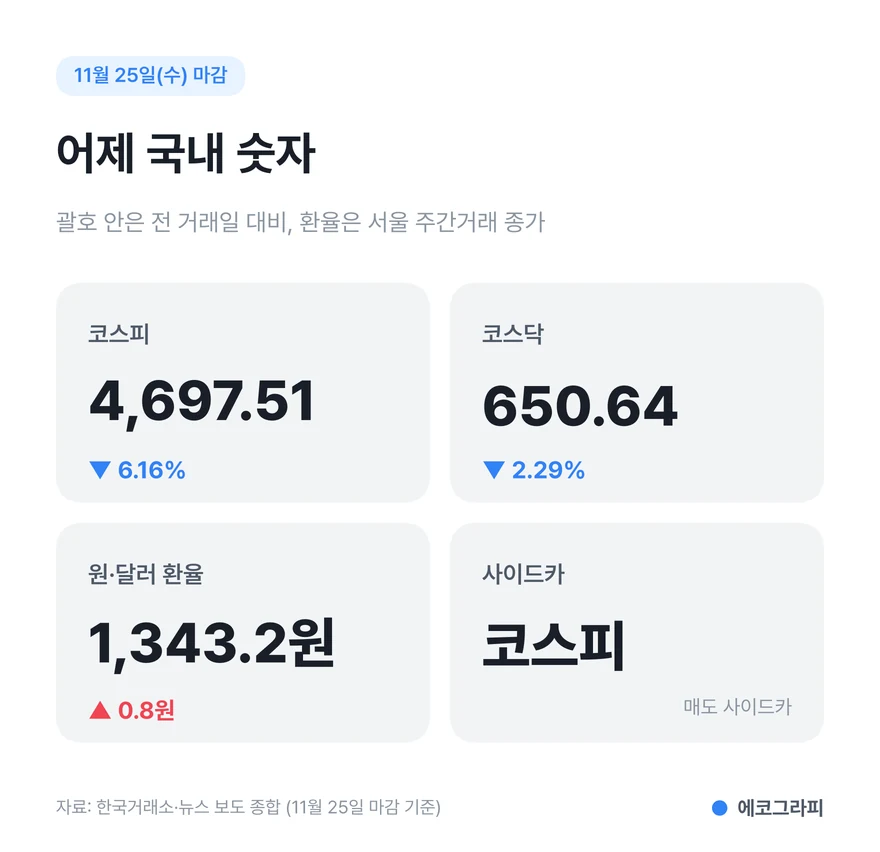
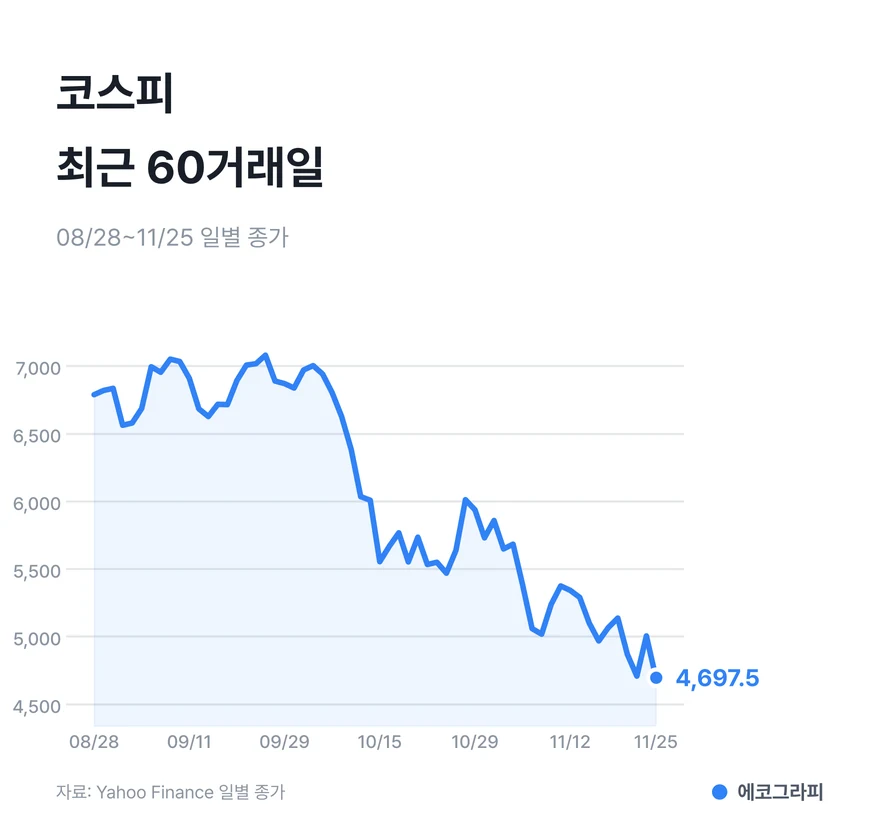
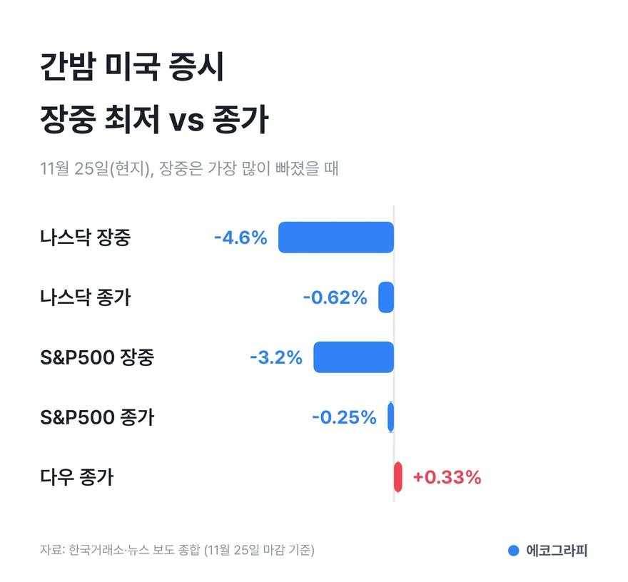
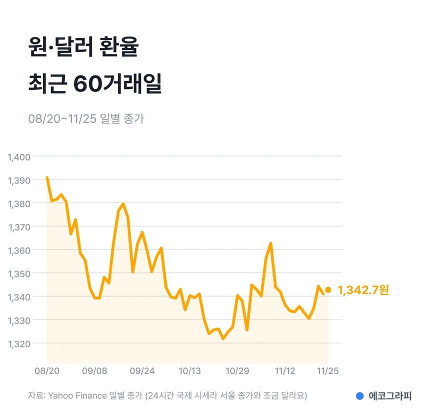
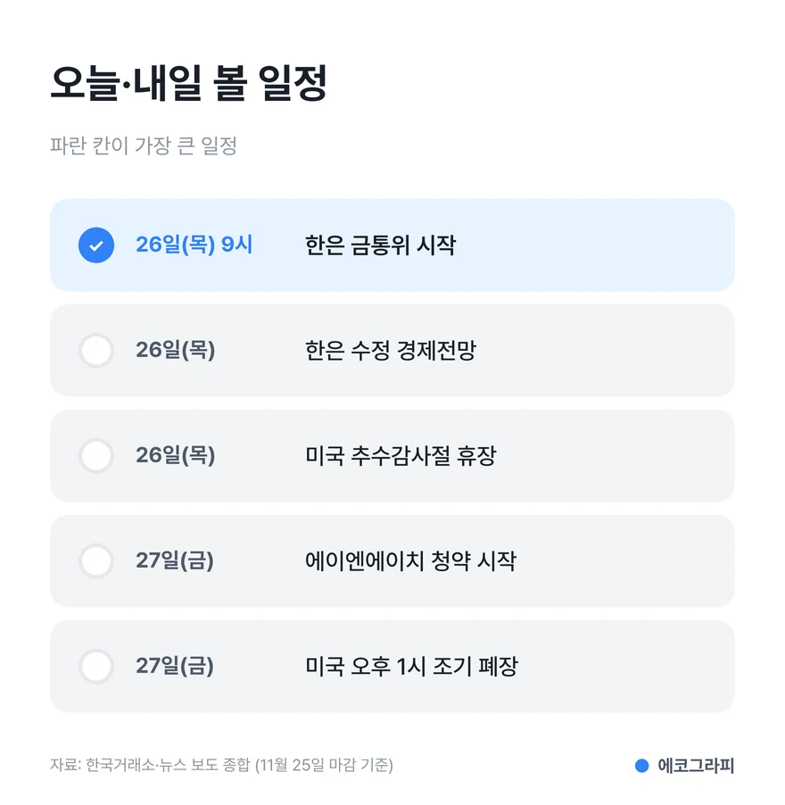

25일(수) 코스피는 308.52포인트(6.16%) 내린 4,697.51로 마감했어요. 장중 저점은 4,672.55였어요. 코스닥은 15.24포인트(2.29%) 내린 650.64예요. 원·달러 환율 서울 종가는 0.8원 오른 1,343.2원으로, 주가가 크게 빠진 것에 비하면 조용했어요.

장 시작 직후 코스피에 매도 사이드카가 걸렸어요. 하루 전 '사자' 사이드카에서 다시 '팔자'로 바뀐 거예요. 삼성전자(-9.87%)와 SK하이닉스(-11.05%)가 크게 빠지며 지수를 끌어내렸고, 외국인은 코스피에서 1조 원 넘게 팔았어요. 반대로 삼성바이오로직스(+5.66%) 같은 제약·바이오주는 올랐어요. 하루 흐름은 어제 저녁 속보 글에 자세히 있어요.

최근 일주일 동안 코스피는 하루 5~6%씩 오르내리는 날이 여러 번 있었어요. 60거래일 그래프로 보면 지난 사흘이 '급락 → 급등 → 급락'으로 거의 제자리로 돌아온 모양이에요.
25일(현지) 뉴욕 증시는 엇갈려 끝났어요. 다우는 164.25포인트(0.33%) 오른 50,182.95, S&P500은 0.25% 내린 7,182.78, 나스닥은 0.62% 내린 23,585.80으로 마감했어요.

숫자만 보면 조용한 하루 같지만 장중엔 크게 흔들렸어요. 개장 직후 나스닥은 4.6%, S&P500은 3.2%까지 빠졌고 다우도 한때 1,100포인트 넘게 밀렸어요. 이후 추수감사절 휴장을 앞둔 저가 매수와 공매도 청산이 들어오며 낙폭 대부분을 되찾았어요. 엔비디아는 장중 9% 넘게 빠졌다가 3.91% 하락으로 마쳤고, 마이크론(-4.53%)·오라클(-5.13%)도 내렸어요. 필라델피아 반도체지수는 0.65% 하락에 그쳤어요.

원·달러 환율은 1,340원대에서 크게 벗어나지 않고 있어요. 미국과 한국이 둘 다 금리를 올리는 쪽으로 가고 있어서, 두 나라 결정이 어떻게 나오는지에 따라 환율도 움직일 수 있어요.

미국 금리 확률을 보는 법은 페드워치 글, 이번 주 전체 일정은 월요일 주간 일정 글에 있어요.
오늘 해볼 것: 기준금리가 오르면 변동금리 대출 이자가 늘 수 있어요. 대출이 있다면 은행 앱에서 다음 금리 변경일과 기준 금리 종류(코픽스 등)를 확인해 두세요.
저가 매수세가 있다는 뜻이긴 하지만, 하루 안에 이렇게 크게 흔들린다는 건 불안이 크다는 신호이기도 해요. 방향을 단정하기보다 변동성이 큰 장이라는 점을 먼저 기억하면 좋아요.
보통 대출 비용이 늘고 주식의 매력이 줄어 부담이 돼요. 다만 인상이 이미 예상돼 있으면 발표 당일 영향은 작을 수 있고, 총재가 앞으로를 어떻게 말하는지가 더 중요할 때가 많아요.
미국에서 새로 나오는 가격 신호가 없어서 국내 이슈(금통위, 반도체주 수급)가 더 크게 작용하기 쉬워요.
외국인이 주식을 많이 팔면 보통 환율이 오르지만, 어제는 0.8원 오르는 데 그쳤어요. 달러 자체가 세계적으로 약간 약해진 영향 등이 함께 작용한 것으로 보여요.
※ 2026년 11월 기준으로 정리한 글입니다. 세율·제도는 바뀔 수 있으니 거래 전 증권사·국세청 안내를 한 번 더 확인하세요. 특정 종목·상품의 매수·매도 권유가 아닙니다.